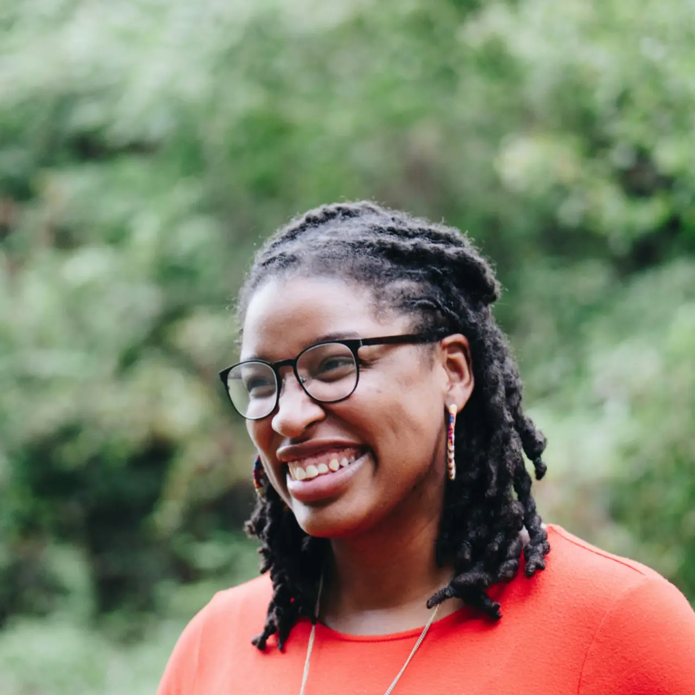

Living with sickle cell disease has been a relentless challenge, one that I have faced with resilience despite the misconceptions that surround my condition. As an orphan residing with my relatives in Osogbo, I have encountered not only the physical agony of the disease but also the emotional toll of stigma and neglect.
My pain episodes are frequent and severe, often leaving me curled up on a thin mattress, struggling to endure the relentless waves of discomfort. Each episode is a battle, yet my suffering extends beyond the physical. My aunt, Mama Tobi, and uncle, Baba Tobi, perceive my condition as a spiritual affliction rather than a medical one.
"It is happening again," Mama Tobi would murmur each time I experienced a crisis, shaking her head in resignation. Baba Tobi would reinforce her beliefs, asserting that my persistent frailty must be linked to supernatural forces. Their unwavering skepticism toward modern medicine meant that I was often left to cope with my pain alone, with no access to the necessary treatment and care.
Despite these challenges, I have never accepted their perspective. I remember the words of doctors when my parents were alive, explaining my condition and the importance of medical care. However, after their passing, I was left to navigate this reality alone, armed only with knowledge and an unyielding will to survive.
It was Aunty Remi, a compassionate neighbor, who ultimately intervened. Observing my frequent absences from school and my visible exhaustion, she took a stand on my behalf. One evening, she confronted Baba Tobi with quiet determination. "This child is not cursed. She is ill and requires medical attention."
Though initially met with resistance, Aunty Remi remained resolute. She took me to a nearby clinic, where a doctor with expertise in sickle cell disease reaffirmed what I had always known. "With appropriate medical care, she can lead a healthy life," he explained. "She requires regular medication, hydration, and a diet that supports her blood health. She is not cursed. She is resilient."
That moment marked a turning point. While my uncle remained skeptical, he allowed Aunty Remi to provide assistance. My aunt, though still bound by traditional beliefs, no longer ignored my condition. Most significantly, I found renewed hope. No longer was I defined by the whispers of superstition—I was recognized for my strength and the potential for a better future.
My journey is a testament to the importance of education and advocacy in dismantling harmful misconceptions about sickle cell disease. It underscores the necessity of awareness in ensuring that individuals like me receive the care and support they deserve. I am not cursed—I am a fighter. And with the right support, I no longer have to fight alone.
"I am not cursed—I am a fighter. And with the right support, I no longer have to fight alone."- Lola